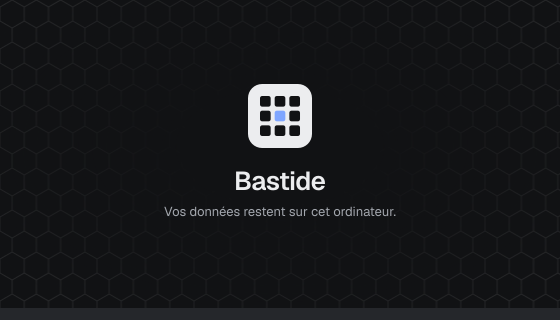

The « Plan » logo
The grid plan of a bastide: nine blocks around a central square, the only coloured cell. Spec: docs/design/18-brand.md. The files are generated by uv run tools/build_icons.py.
The mark
24-unit grid. Tile 24 × 24, radius 5.3 (22 %). Nine 4 × 4 squares, radius 0.8, at x and y ∈ {4.5, 10, 15.5}. The same geometry at every size, down to the 16 px minimum.
Colours
In the app the tile is primary, the squares onPrimary and the centre accent, so the mark follows the theme.
Lockups
« Bastide » in Geist 600, tracking −0.02 em. The cap height is two squares and a gap (9.5 units); 8 units between mark and name. Sidebar 20/14, auth 20/16, À propos 44/16, startup screen 64/26.
Clear space and misuse
One cell (4 units) clear on every side. Never a gradient, a shadow, an outline, a rotation, a second coloured cell, or the mark without its tile on a busy ground.
The « tomettes » texture
24.25 × 42 px tile, 1 px stroke, white or black at 7 %. Only on the auth screens, empty states, the sidebar's empty stretch, a goal banner without an image, the À propos header, the startup screen and the installer.
Installer splash

560 × 320 px, opaque, text outlined. The bottom 12 px are the progress track; the installer fills it in #7FA6FF.